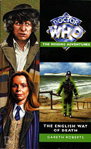

|
The English Way of Death
|
BASIC PLOT DOCTOR COMPANIONS MATERIALISATION CIRCUIT PREPARATORY READING CONTINUITY REFERENCES Pg 19 "Through the space-time vortex, the region of the multi-universal domain in which time and space have no meaning, there spun a craft disguised as a sturdy blue police telephone box." The TARDIS was frequently sighted spinning through the vortex at the beginning of Tom Baker stories. Pg 20 "The Black Guardian." Pursuing the Doctor in the wake of The Armageddon Factor. Pg 31 "My study of the TARDIS flight log suggests that your attempt to take a holiday on Earth will result in mortal peril and violent action." Probably a reference to the loose arc in the NAs about taking a holiday, which included White Darkness, Shadowmind and Iceberg. Pg 81 "The vapour surrounding him billowed and a small colourless cloud detached itself and settled over Stackhouse." Gas animating the bodies of the dead is somewhat prescient of The Walking Dead. Pg 89 The chapter title is "The Ultimate Obscenity", perhaps a reference to the Doctor Who musical, The Ultimate Adventure. It's a pretty apposite reference at that. Pg 98 "'Not 'ome, ohm,' said the Doctor, his eyes opening wide. 'It's a sort of meditation." Planet of the Spiders used it a lot, and his withdrawing of his consciousness here owes something to Terror of the Zygons. Pg 107 The Doctor makes a device: "It's just a lot of my cutlery and things, tied up with piano wire." Sounds like The Time Monster to me. Pg 109 "His large eyes seemed to scan the columns of print at incredible speed." The Doctor demonstrates speed-reading in City of Death and Rose. Pg 122 Perceval's choice of name - originally 'Position Closed' - which came from looking at old photographs of bank tellers and misunderstanding them, is pretty much identical to how Ford Prefect chose his name in The Hitch-Hiker's Guide to the Galaxy. And Ford Prefect was written by Douglas Adams as an anti-Doctor, someone who would always prefer to go to a party than save the universe. See how these things come full circle? Pg 142 "Ginger pop. Should perk you up after the upset on the road." A lot is made of the ginger pop, so it's probably a reference to The Android Invasion. It's made even more explicit in the audio adaptation, which has Romana noting that the Doctor likes it. Pg 183 "The creator of the original model had K9 registered as a data patent on, let me see, October the third 4998." The Invisible Enemy's time period. Pg 189 "'Did you people realize,' asked Romana, 'how dangerous it is to interfere with active matter from a grey interchange?' 'I believe they do now,' said Zodaal bitterly. 'It took my folly to show them that.'" Zodaal's origin story owes a great deal to Omega's in The Three Doctors. Pg 190 ... Made even more obvious by: "An existence here, trapped and alone, was worse than any physical torment. I-" At which point K9 tells him off for being too poetic, which is quite funny. Pg 201 "'The town was swallowed up by London, I imagine,' 'In relative Earth year 2415,' K9 said unhelpfully.'" Presumably as part of the expansion of the main cities on the planet, which led to the megacities that we saw in Original Sin. Pg 202 "The Equation of Rassilon!" Because the man didn't already have enough things named after him. Pg 203 "Zastor, Zantos, Zaphon, Zeta Minor, Zeus, Zilda, Zoe, Zygons." Meglos, a place in Turkey, a biblical location, Planet of Evil, a Greek God, The Robots of Death, companion of the second Doctor and Terror of the Zygons. Pg 208 "But the hand's grip was immovable." The general Doctor Who dance of pretending you're being attacked by something whilst actually holding it up to your neck, later illustrated in Rose. Pg 216 "With an exultant hiss the vapour forming Zodaal's better half withdrew from K9, streamed briefly through the untrammeled air of the dome, and pouted itself down in a typhoon shape through the neck of the bottle." What probably happened to Fenric, a long time ago, in the backstory to The Curse of Fenric. Pg 227 "When the energy expended from the death throes of Earth is absorbed, I shall use it to refashion myself." Almost identical to Blon Fel-Fotch's plan in Boom Town. Pg 253 "I know that the hierarchy of Gallifrey is weak and corrupt." The Deadly Assassin. Pg 255 "Zodaal must already have a good working knowledge of stellar engineering." Like Omega again. Pg 257 "'There was that time with the Hypnotron,' continued the Doctor. 'Ha. Beat him. The Aquamen. Beat them. And then there was the Steel Octopus.'" They're all comics references, but it's also very similar to Tom Baker's recorded introduction to the VHS release of Shada. Pg 271 "And thus the whirligig of time brings in his revenges." Twelfth Night, Shakespeare. Roberts seems to always put at least one Shakespeare quote in his books. This will later come to fruition with The Shakespeare Code. Pg 278 A final, brief reference to our old friend the Black Guardian. OLD FRIENDS AND OLD ENEMIES NEW FRIENDS AND NEW ENEMIES Denizens of the future: Perceval Closed, Harriet Kipps (a possible George Bernard Shaw reference), Godfrey Wise and Davina Chipperton.
CONTINUITY COCK-UPS PLUGGING THE HOLES [Fan-wank theorizing of how to fix continuity cock-ups] FEATURED ALIEN RACES FEATURED LOCATIONS Nutchurch, on the South Coast, in both 1929 and 1930. Environs in South East and Central London including the Aldwych, Blackheath, a Lyons tea shop on Fleet Street, a warehouse in Jasmine Street, Wapping and Ranelagh Square, all in the space of two days in June 1930. A space capsule trapped in a time corridor, somewhere between 1930 and a future which remains indeterminate. IN SUMMARY - Anthony Wilson |
|
 |